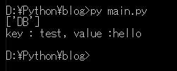

[Python] INI(環境設定ファイル)を扱う方法
こんにちは。明月です。
この投稿はPythonでINI(環境設定ファイル)を扱う方法に関する説明です。
以前、C言語やC++言語プログラムで環境ファイル設定タイプでInitialization設定ファイルということです。
INIファイルの拡張子は普通はiniでなっていますが、confやcfgに使う時もあります。
INIの設定構造はセッションとキーになっています。コメントはセミコロン(;)を使います。
apacheなどini設定ファイルで環境ファイルがまだあります。
なのでCIツール(jenkins)でビルドする時、Pythonで自動環境ファイル設定スクリプトを作ることでよく使います。
# iniを扱うためにconfigparserをimportする。
import configparser
# configparserのConfigParser関数を呼び出す。
config = configparser.ConfigParser()
# configparserはリストのキーはセッションを設定する。ディクショナリのキーで環境ファイルのキーを設定するし、値で環境ファイルの値になる。
config["DB"] = { "test" : "hello"}
# IOを利用して出力する。
with open('example.ini', 'w') as handle:
# パーサにIOを入れて出力する。
config.write(handle)
configをリストのキーでセッション名を設定します。
そのリストでディクショナリを設定すればディクショナリのキー、値によって環境ファイルを設定します。
今回はINIファイルを読み込んでPythonで使いましょう。
# iniを扱うためにconfigparserをimportする。
import configparser
# configparserのConfigParser関数を呼び出す。
config = configparser.ConfigParser()
# example.iniファイルを読み込む。
config.read('example.ini')
# セッションの種類を取得してコンソールに出力する。
print(config.sections())
# DBセッションのキーを取得する。
keys = config["DB"].keys()
# 繰り返しする。
for key in keys:
# キーを通って値を出力する。
print("key : " + key + ", value :" + config["DB"][key])

iniを読み込んでsectionsの関数を通ってセッションキーを取得します。そしてkeysの関数で環境ファイルのキーを取得することができるし、そのキーを通って値を出力することができます。
PHPをインストールするとphp.iniファイルがあります。
Pythonを利用してphp.iniファイルを扱いましょう。
上のイメージはphp.iniをメモ帳で読み込むことです。親切にコメントがあります。でも、コメントが多すぎです。なので逆に値を探すのが大変です。
私もたまにコメントが多すぎてコメントをすべて消したい時があります。
# iniを扱うためにconfigparserをimportする。
import configparser
# configparserのConfigParser関数を呼び出す。
config = configparser.ConfigParser()
# php.iniファイルを読み込む。
config.read('php.ini')
# IOを利用して出力する。
with open('phpex.ini', 'w') as handle:
config.write(handle)
上みたいにiniファイルを読み込んで再作成するとコメントがすべてなくなって綺麗なINIファイルができると思いました。でも、エラーが発生しました。
調べるとINIファイルでセッションとキー単位で同じキーがあります。

実際INIでセッションかつキーはユニックなのでデータが複数にあることは存在しません。
でも、php.iniでは使います。
インタネットを調べると私と同じ問題で解決したことがあります。
link - https://stackoverflow.com/questions/15848674
# iniを扱うためにconfigparserをimportする。
import configparser
# 重複キーをlistで解決する方法
class MultiValueDict(dict):
def __setitem__(self, key, value):
if isinstance(value, list) and key in self:
self[key].extend(value)
else:
super().__setitem__(key, value)
# ここでstrict、 empty_lines_in_values、 dict_typeの三つのオプションを設定しなければならない。
config = configparser.RawConfigParser(strict=False, empty_lines_in_values=False, dict_type=MultiValueDict)
# iniファイルを読み込む。
config.read('php.ini')
# IOを利用して出力する。
with open('phpex.ini', 'w') as handle:
config.write(handle)
結果はコメントが削除されてINIが新しく作成されました。でも重複されたextensionのキーでは可笑しく入力されています。
# iniを扱うためにconfigparserをimportする。
import configparser
# 重複キーをlistで解決する方法
class MultiValueDict(dict):
def __setitem__(self, key, value):
if isinstance(value, list) and key in self:
self[key].extend(value)
else:
super().__setitem__(key, value)
# ここでstrict、 empty_lines_in_values、 dict_typeの三つのオプションを設定しなければならない。
config = configparser.RawConfigParser(strict=False, empty_lines_in_values=False, dict_type=MultiValueDict)
# iniファイルを読み込む。
config.read('php.ini')
# IOを利用して出力する。
with open('phpex.ini', 'w', newline = '') as handle:
# セッションキーを取得する。
sessionkeys = config.keys()
# キー別で繰り返す。
for sessionkey in sessionkeys:
# セッションキーをfileで出力する。形は[セッションキー]だ。
print("["+sessionkey+"]", file=handle)
# セッションキーでキーを取得する。
keys = config[sessionkey].keys()
# キー別で繰り返す。
for key in keys:
# 各キーの値を改行する、リストを作って出力する。
for item in config[sessionkey][key].split("\n"):
# 出力する。
print(key+"="+item,file=handle)
コメントが除いたiniファイルが生成されました。
ここまでPythonでINI(環境設定ファイル)を扱う方法に関する説明でした。
ご不明なところや間違いところがあればコメントしてください。
- [Python] メール(smtplib)を送信する方法2020/07/27 18:38:43
- [Python] HttpConnection(requestsモジュール)でウェブサーバーで接続する方法2020/07/20 14:41:51
- [Python] Excel(openpyxl)を扱う方法2020/07/16 16:40:31
- [Python] ファイル圧縮、解凍(zipfile)する方法2020/07/14 19:14:22
- [Python] Apache cgiでPythonを使う方法2020/07/09 19:58:19
- [Python] Web serverを起動する方法(http.server)2020/07/09 00:13:13
- [Python] WebSocketを使う方法2020/07/07 17:29:18
- [Python] PythonとJavaのソケット通信する方法2020/07/03 18:35:50
- [Python] PythonとC#のソケット通信2020/07/01 19:28:22
- [Python] INI(環境設定ファイル)を扱う方法2020/06/30 18:26:01
- [Python] Jsonを扱う方法2020/06/29 19:18:15
- [Python] XMLファイルを扱う方法2020/06/26 19:18:14
- [Python] IOを利用してCSVファイルを扱う方法2020/06/25 18:20:30
- [Design pattern] 1-4. デザインパターンの抽象ファクトリーパターン(Abstract factory pattern)2021/10/15 19:31:03
- [Project design] 要件定義(要求事項整理)2021/10/15 19:28:58
- [C#] 52. Reflection機能を使い方 - Variable2021/10/15 19:27:37
- [Project design] プロジェクトを工程(ウォーターフォール vs アジャイル)2021/10/14 18:36:04
- [C#] 51. Reflection機能を使い方 - Method2021/10/14 18:34:21
- [C#] 50. Reflection機能を使い方 - Class2021/10/13 18:34:13
- [C#] 49. Operator(演算子)のオーバーロードを使い方2021/10/12 18:28:42
- [C#] 48. IEnumerableとIEnumerator、そしてyieldキーワード2021/10/11 19:49:33
- [C#] 47. Nugetを使い方(外部ライブラリ)とデータベース(MariaDB(Mysql))を使い方、そしてトランザクション(Transaction)2021/10/08 18:58:57
- [Window] MariaDBをインストールする方法2021/10/08 18:56:05
- [C#] 46. データベース(MSSQL)に接続する方法2021/10/07 18:39:58
- [C#] 45. ネットワークソケット通信(Socket)を使い方2021/10/06 19:06:25
- [C#] 44. ファイル(FileInfo)とディレクトリ(DirectoryInfo)を扱い2021/10/05 19:29:34
- [C#] 43. ストリーム(Stream)とバイナリ(byte[])、エンコード(Encoding)、そしてusingを使い方とIDisposableインターフェース2021/10/04 18:33:04
- [C#] 42. ファイルを扱い(IO)とファイルメタデータ(FileInfo)を使い方2021/10/01 20:10:21